Pizzini
Il crittogramma
La chiave
Il metodo
keyboard_arrow_down
Questo metodo per la cifratura di un testo si basa sul cifrario di Cesare.
Il cifrario è costruito in modo che ad ogni lettera dell’alfabeto italiano venga sostituita la lettera che si trova a N posizioni avanti, dove N è la chiave definita dall’utente.
Ad ogni lettera del testo in chiaro viene sostituita la posizione di tale lettera nel cifrario. È quindi un metodo di sostituzione poligrafica.
Il cifrario è costruito in modo che ad ogni lettera dell’alfabeto italiano venga sostituita la lettera che si trova a N posizioni avanti, dove N è la chiave definita dall’utente.
Ad ogni lettera del testo in chiaro viene sostituita la posizione di tale lettera nel cifrario. È quindi un metodo di sostituzione poligrafica.
Il codice
keyboard_arrow_down
<html>
<head>
<title>Pizzini</title>
<script>
alfabeto = "abcdefghijklmnopqerstuvwxyz";
function Pizzini(){
testo = document.f.t.value.toLowerCase();
crittogramma = '';
chiave = parseInt(document.f.k.value);
for(i=0;i<testo.length;i++)
{
carattere = testo.charAt(i);
posizione = alfabeto.indexOf(carattere);
posizione += chiave;
if(posizione < 0){
posizione = posizione + alfabeto.length;
posizione = posizione % alfabeto.length;
}
crittogramma += posizione + " ";
}
document.f.tc.value = crittogramma;
}
</script>
</head>
<body>
<h2>Pizzini</h2>
<div>
<form name="f">
<br>
Testo in chiaro<input type="text" name="t"><br>
Chiave<select name='k'>
<script>
for(j =- alfabeto.length;j< = alfabeto.length;j++)
document.write('<option>'+j);
</script>
</select>
<input type="button" value="Cripta" onclick="Pizzini()"><br>
Testo crittato<input type="text" name="tc">
</form>
</div>
</body>
</html>
La storia
keyboard_arrow_down
Questo sistema veniva utilizzato da Bernardo Provenzano per proteggere informazioni rilevanti scritte nei suoi famosi pizzini, i piccoli foglietti di carta con i quali il boss della mafia, durante la sua latitanza, riceveva informazioni e impartiva ordini.
Bernardo Provenzano, è stato un mafioso italiano, membro di Cosa Nostra e considerato il capo dell'organizzazione a partire dal 1995 fino al suo arresto, avvenuto nel 2006.
Prima del suo arresto, Provenzano era ricercato dal 1963, con una latitanza record di 43 anni. morì il 13 luglio 2016, a Milano.
Source: Wikipedia.
Polibio
Il crittogramma
La chiave
Il metodo
keyboard_arrow_down

Questo metodo a sostituzione monoalfabetica monografica si basa su un sistema senza chiave di criptazione, basato su una tabella (vedi immagine sopra).
La tabella di sostituzione è formata da 25 caselle (5 righe e 5 colonne), dentro le quali sono inserite le lettere dell’alfabeto. Ad ogni lettera del testo in chiaro vengono sostituiti la sua posizione (prima la riga e poi la colonna) nella tabella.
La lettera C verrà sostituita inevece con 13 (1,3).
Quindi, ad esempio, il testo in chiaro CIAO verrà criptato in: 13 24 11 34.
La tabella di sostituzione è formata da 25 caselle (5 righe e 5 colonne), dentro le quali sono inserite le lettere dell’alfabeto. Ad ogni lettera del testo in chiaro vengono sostituiti la sua posizione (prima la riga e poi la colonna) nella tabella.
Esempio:
La lettera A del testo in chiaro verrà sostituita con 11 (1,1). La lettera C verrà sostituita inevece con 13 (1,3).
Quindi, ad esempio, il testo in chiaro CIAO verrà criptato in: 13 24 11 34.
Il codice
keyboard_arrow_down
<html>
<head>
<title>Polibio</title>
<script>
alfabeto = "abcdefghijklmnopqerstuvwxyz";
function Polibio(){
testo = document.f.t.value.toLowerCase();
crittogramma = '';
for(i=0;i<testo.length;i++)
{
valx = alfabeto.indexOf(testo.charAt(i))%5+1;
valy = alfabeto.indexOf(testo.charAt(i))/5+1;
crittogramma += parseInt(valy)+""+valx+" ";
}
document.f.tc.value = crittogramma;
}
</script>
</head>
<body>
<h2>Polibio</h2>
<div>
<form name="f">
<br>
Testo in chiaro<input type="text" name="t">
<input type="button" value="Cripta" onclick="Polibio()"><br>
Testo crittato<input type="text" name="tc">
</form>
</div>
</body>
</html>
La storia
keyboard_arrow_down
Questo metodo fu inventato dallo storico greco Polibio, intorno al 150 a.c.
Inizialmente Polibio utilizzava questo metodo per la comunicazione a distanza, mentre venne usato più recentemente dai nichilisti russi sia per secretare i loro messaggi sia come forma di comunicazione durante la prigionia sotto l'epoca degli zar. In questa forma è stata adoperata anche dai prigionieri di guerra americani durante la guerra del Vietnam.
Source: Wikipedia.